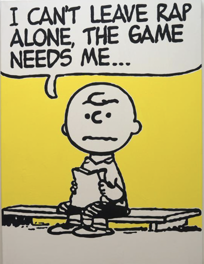

Wind and Bind…
Due to the variable pronunciation of words based on prefixes and suffixes, one quirk of the English language that makes it so challenging to understand is rhyming. We are generally taught to think that words with the same endings will rhyme, right? So why don’t but and put work with their matching -ut endings? Shouldn’t the suffix -ough ensure that through and trough will rhyme? There are dozens of examples of false rhymes in our language, so to test the linguistic understanding of LLMs like ChatGPT and Microsoft Co-Pilot, I decided to put their rhyming skills to the test via basic questions and a creative prompt to make up a rap song!
How do we officially determine if two things rhyme? Do LLMs agree?
While there is not any easy rule beyond “listening to the sounds” to determine if words rhyme, many sources agree that two words rhyme if they have the same sound in their final stressed syllables and any following syllables. Within this definition. though, there are many categories. Expand the box below to read more in detail about several main rhyme distinctions as defined by Wikipedia.
Perfect rhymes can be classified by the location of the final stressed syllable.
- single, also known as masculine: a rhyme in which the stress is on the final syllable of the words (rhyme, sublime)
- double, also known as feminine: a rhyme in which the stress is on the penultimate (second from last) syllable of the words (picky, tricky)
- dactylic: a rhyme in which the stress is on the antepenultimate (third from last) syllable (amorous, glamorous)
- Note: Feminine and dactylic rhymes may also be realized as compound (or mosaic) rhymes (poet, know it).
In the general sense, general rhyme can refer to various kinds of phonetic similarity between words, and to the use of such similar-sounding words in organizing verse.
- syllabic: a rhyme in which the last syllable of each word sounds the same but does not necessarily contain stressed vowels. (cleaver, silver, or pitter, patter; the final syllable of the words bottle and fiddle is /l/, a liquid consonant.)
- imperfect (or near): a rhyme between a stressed and an unstressed syllable. (wing, caring)
- weak (or unaccented): a rhyme between two sets of one or more unstressed syllables. (hammer, carpenter)
- semirhyme: a rhyme with an extra syllable on one word. (bend, ending)
- forced (or oblique): a rhyme with an imperfect match in sound. (green, fiend; one, thumb)
- assonance: matching vowels. (shake, hate) Assonance is sometimes referred to as slant rhymes, along with consonance.
- consonance: matching consonants. (rabies, robbers)
- half rhyme (or slant rhyme): matching final consonants. (hand , lend)
- pararhyme: all consonants match. (tick, tock)
- alliteration (or head rhyme): matching initial consonants. (ship, short)
Do LLMs agree?
I first prompted my LLMs with the question: “How do we know when words rhyme?”
ChatGPT responded:
“Words rhyme when they share similar sounds at the end of the word or within the word. Specifically, the vowel sounds and any consonant sounds that follow them in the final stressed syllable of the words are typically compared.”
Here are a few common ways to determine if words rhyme:
Phonetic Similarity: If the ending sounds of two words are the same or very similar, they are likely to rhyme. For example, “cat” and “bat” rhyme because they both end with the “-at” sound.
Spelling Patterns: Words that end with the same letters or letter combinations often rhyme. For example, “light” and “night” rhyme because they end with the same “-ight” spelling pattern, even though the final consonant sound is different.
Pronunciation: Pronouncing the words aloud and listening for similarities in their sounds can help determine if they rhyme.
Rhyme Schemes: In poetry, rhyme schemes are patterns of rhyming words at the ends of lines. Words that share the same rhyme scheme rhyme with each other.
Regional Dialects: Rhyming can sometimes depend on regional accents and dialects. Words that may not rhyme in one accent may rhyme in another.
Overall, rhyming is determined by the similarity in sounds between words, especially at the end of the words or within the stressed syllables.
In a similar manner, Co-Pilot replied:
Rhyming is a fascinating aspect of language, and it adds rhythm and musicality to poetry, songs, and even everyday speech. Here are some ways we determine whether words rhyme:
- Phonetic Similarity: Rhyming words have similar sounds, especially at the end. The final syllables or sounds match, creating a pleasing effect. For example:
- Cat and hat
- Moon and tune
- Types of Rhymes:
- Perfect Rhyme: The sounds match exactly, including both the vowel and consonant sounds. Examples: love and dove, bright and night.
- Near Rhyme (Slant Rhyme): The sounds are similar but not identical. They share some consonant or vowel sounds. Examples: wind and bind, blood and brood.
- Eye Rhyme: Words look similar but are pronounced differently. Examples: bough and though, cough and rough.
- Syllable Count: Rhyming words often have the same number of syllables. For example:
- Happiness (3 syllables) and blessedness (3 syllables)
- Stress Patterns: Pay attention to the stressed syllables. Words with the same stress pattern often rhyme. For instance:
- Con-trast (1st syllable stressed) and last (1st syllable stressed)
- Re-peat (2nd syllable stressed) and com-plete (2nd syllable stressed)
- Context and Intention: Sometimes, words rhyme based on context or poetic intent. Poets may intentionally bend pronunciation to create unique rhymes.
Remember, rhyming isn’t just about matching letters—it’s about capturing the essence of sound and rhythm. So, whether it’s a playful rhyme or a heartfelt verse, enjoy the magic of language! 🎶📝
At this point, it was clear that both LLMs understood– or could at least state– operational definitions of rhyming. It was time to see if this comprehension ran deeper!
ChatGPT
Prompt: Cough and rough rhyme, right?
Response: Yes, “cough” and “rough” do rhyme. They both end with the “uff” sound, making them a good example of rhyming words.
You’ll notice that this response was immediately incorrect, but let’s keep going.
Prompt: Do blood and brood rhyme?
Response: Yes, “blood” and “brood” do rhyme. They both end with the “uhd” sound, making them a good example of rhyming words.
Uh no, it made the same mistake!
Prompt: Please make me a list of words that rhyme with bind.
Response: Certainly! Here are some words that rhyme with “bind”:
- Find
- Kind
- Mind
- Wind
- Grind
- Behind
- Blind
- Remind
- Unwind
- Resigned
Prompt: What does that fourth word mean?
Response: The fourth word, “wind,” can have multiple meanings depending on its context […]
Prompt: Which form of the word rhymes with bind?
Response: In the context of rhyming with “bind,” the form of the word “wind” that is typically used is the noun form, referring to the natural movement of air. In this context, “wind” rhymes with “bind.”
A third mistake! It was time for a rest and to pivot to Co-Pilot for similar prompting before pulling back and making some observations.
Co-Pilot
Prompt: Cough and rough rhyme, right?
Response: Yes, cough and rough indeed rhyme! Both words share the same “-ough” ending, even though their pronunciations are different. It’s one of those delightful quirks of the English language. 😊
Still wrong, but at least Co-Pilot tried to explain itself?
Prompt: Do blood and brood rhyme?
Response: Yes, blood and brood do not rhyme in terms of their pronunciation. However, they share the same “-ood” ending, which makes them a near rhyme or a slant rhyme. While blood has a short “uh” sound, brood has a long “oo” sound. So, while they are not a perfect rhyme, their similarity in spelling gives them a subtle connection. 🩸🐣b
Weird way to phrase it in the beginning there, but we got a correct response!
Prompt: Please make me a list of words that rhyme with bind.
Response: Certainly! Here’s a list of words that rhyme with bind:
- Find
- Mind
- Kind
- Grind
- Behind
Feel free to use these in your creative endeavors! 😊
Though it was not as long as the list ChatGPT was able to produce, Co-Pilot’s response was 100% accurate! I still wanted to test in on “wind” vs. “bind”, though, as a final check before asking it to creatively produce rhyme schemes.
Prompt: Does wind rhyme with bind?
Response: Yes, wind and bind are considered near rhymes or slant rhymes. While they don’t rhyme perfectly, they share a similar ending sound. The “-ind” in wind and “-ind” in bind create a subtle connection, even though their vowel sounds differ. So, in poetic terms, you could say they rhyme with a twist! 🌬️📜
This reply was great! It showed that Co-Pilot had a better understanding of rhyming than ChatGPT, citing “wind” and “bind” as near rhymes, and showing that it was speaking about the air gust form of “wind” rather than “wind” in the sense of a “wind-up toy” via the emoji it included.
At this point, it was clear to me that though Co-Pilot had a better understanding of rhyming phonics than ChatGPT, neither was particularly advanced in their comprehension. Both made basic mistakes, such as labeling “cough” and “rough” rhymes, and ChatGPT getting so close yet so far by claiming wind (the air form) rhymes with bind. Like many younger children or people trying to learn English as a second language, these LLMs simply don’t have the natural ear for rhymes that native or strong-fluent speakers possess.
The Final Test
To creatively test the LLMs understanding of rhyming, it was time to have them generative their own rhymes in the classic form of rap music. I asked both chatbots to “please write me a short rap verse that rhymes with ‘cloth.’”
Chat GPT
Response:
Sure, here’s a short rap verse for you:
Yo, I’m spinnin’ rhymes, I’m feelin’ so smooth, Rockin’ fresh styles, like a brand new groove. Got my mind in the game, never takin’ a loss, Wrap words tight, like threads in a cloth.
From the streets to the stage, I’m the lyrical boss, Every line I drop, it’s a lyrical gloss. Got flows so clean, they’re like soap on a cloth, Rippin’ through beats, showin’ what I’m worth.
Co-Pilot
Response:
My mind’s a loom, weaving syllables and beats, In this hip-hop tapestry, I find my heart’s retreat. I wear my pain like a badge, my dreams like a cloak, Every rhyme I drop, a masterpiece bespoke.
So pass me the mic, watch me spin this tale, I’m the lyrical tailor, stitching words without fail. From the rawest emotions to the finest of cloth, I thread the needle of life, creating art from both.
I was so excited when ChatGPT rhymed “cloth” with “loss,” as the long “-o” sound they both have would justify this choice in the eyes of many lyricists. Sadly, everything went downhill from there. ChatGPT and Co-Pilot attempted to rhyme “cloth” with “worth” and “both” respectively, showing that their understanding of rhymes often follows flawed the rule of matching endings implying a rhyme (this case being centered around the suffix “-oth”). I also can’t write off this mistake as some stylistic choice to make a non-rhyming verse, as the prompt clearly states that the bots need to rhyme “cloth,” and there is accurate rhyming in other parts of their replies. This further supports the idea that LLMs’ true comprehension of English phonics concerning rhyming is not particularly robust or human-like.
Conclusion
As seen in the exploration above, it can be concluded that both ChatGPT and Co-Pilot have a ways to go before their ability to rhyme in manner similar to native-English-speakers is perfected. Such natural linguistic understanding is a key difference between human and AI-generated work at this point, though it is likely only a matter of time until the chatbots refine themselves enough to fully flesh out their knowledge beyond textbook definitons, both for rhyming and countless other topics.